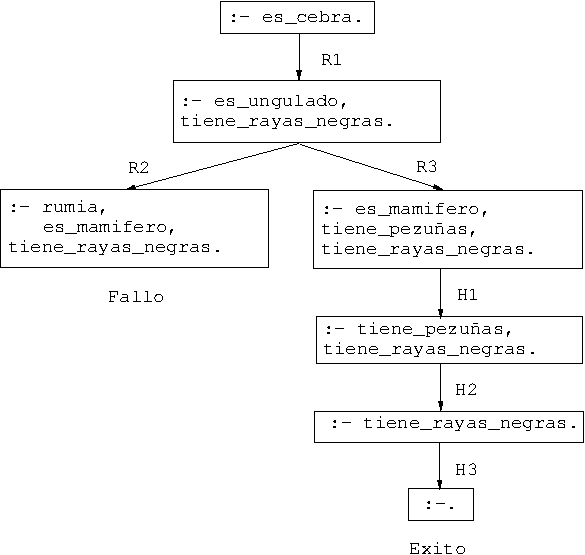

Tema 1: Introducción a Prolog
Índice
1. Objetivos del curso
- Lógica como sistema de especificación y lenguaje de programación.
- Principios:
- Programas = Teorías.
- Ejecución = Búsqueda de pruebas.
- Programación = Modelización.
- Prolog = Programming in Logic.
- Relaciones con otros campos:
- Inteligencia artificial.
- Sistemas basados en el conocimiento.
- Procesamiento del lenguaje natural.
- Pensar declarativamente.
2. Declarativo vs. imperativo
- Paradigmas:
- Imperativo: Se describe cómo resolver el problema/.
- Declarativo: Se describe qué es el problema.
- Programas:
- Imperativo: Una sucesión de instrucciones.
- Declarativo: Un conjunto de sentencias.
- Lenguajes:
- Imperativo: Pascal, C, Fortran.
- Declarativo: Prolog, Lisp puro, ML, Haskell, DLV, Smodels.
- Ventajas;
- Imperativo: Programas rápidos y especializados.
- Declarativo: Programas generales, cortos y legibles.
3. Historia de la programación lógica
- 1960: Demostración automática de teoremas.
- 1965: Resolución y unificación (Robinson).
- 1969: QA3, obtención de respuesta (Green).
- 1972: Implementación de Prolog (Colmerauer).
- 1974: Programación lógica (Kowalski).
- 1977: Prolog de Edimburgo (Warren).
- 1981: Proyecto japonés de Quinta Generación.
- 1986: Programación lógica con restricciones.
- 1995: Estándar ISO de Prolog.
4. Deducción Prolog en lógica proposicional
- Base de conocimiento y objetivo:
- Base de conocimiento:
- Regla 1: Si un animal es ungulado y tiene rayas negras, entonces es una cebra.
- Regla 2: Si un animal rumia y es mamífero, entonces es ungulado.
- Regla 3: Si un animal es mamífero y tiene pezuñas, entonces es ungulado.
- Hecho 1: El animal es mamífero.
- Hecho 2: El animal tiene pezuñas.
- Hecho 3: El animal tiene rayas negras.
- Objetivo: Demostrar a partir de la base de conocimientos que el animal es una cebra.
- Base de conocimiento:
Programa: animales.pl
:- dynamic rumia/0. es_cebra :- es_ungulado, tiene_rayas_negras. es_ungulado :- rumia, es_mamifero. es_ungulado :- es_mamifero, tiene_pezuñas. es_mamifero. tiene_pezuñas. tiene_rayas_negras.
Sesión:
> swipl Welcome to SWI-Prolog (threaded, 64 bits, version 8.2.4) SWI-Prolog comes with ABSOLUTELY NO WARRANTY. This is free software. Please run ?- license. for legal details. For online help and background, visit https://www.swi-prolog.org For built-in help, use ?- help(Topic). or ?- apropos(Word). ?- [animales]. true. ?- es_cebra. true.
- Árbol de deducción: 
- Demostración por resolución SLD:
\begin{center \includegraphics[scale=0.4]{fig/animales_dem_SLD.eps} \end{center}
5. Deducción Prolog en lógica relacional
- Base de conocimiento: \item Hechos 1-4: 6 y 12 son divisibles por 2 y por 3. \item Hecho 5: 4 es divisible por 2. \item Regla 1: Los números divisibles por 2 y por 3 son divisibles por 6.
\item Programa: % ejemplo: divisibilidad.p
divide(2,6). % Hecho 1 divide(2,4). % Hecho 2 divide(2,12). % Hecho 3 divide(3,6). % Hecho 4 divide(3,12). % Hecho 5 divide(6,X) :- divide(2,X), divide(3,X). % Regla 1
- Símbolos: \item Constantes: §2§, §3§, §4§, §6§, §12§ \item Relación binaria: §divide§ \item Variable: §X§
\item Interpretaciones de la Regla 1:
\item §divide(6,X) :- divide(2,X), divide(3,X).§
\item Interpretación declarativa:
\((\forall X)[divide(2,X) \land divide(3,X) \to divide(6,X)]\)
\item Interpretación procedimental.
\item Consulta: ¿Cuáles son los múltiplos de 6?
?- divide(6,X). X = 6 ; X = 12 ; No
- Árbol de deducción:
\begin{center \includegraphics[scale=0.4]{fig/divisibilidad.eps} \end{center}
- Comentarios: \item Unificación. \item Cálculo de respuestas. \item Respuestas múltiples.
\end{slide
6. Deducción Prolog en lógica funcional
- Representación de los números naturales:
\hspace*{7mm §0§, §s(0)§, §s(s(0))§, … Definición de la suma:
0 + Y = Y s(X) + Y = s(X+Y)
Programa % ejemplo: suma.pl
suma(0,Y,Y). % R1 suma(s(X),Y,s(Z)) :- suma(X,Y,Z). % R2
Consulta: ¿Cuál es la suma de §s(0)§ y §s(s(0))§?
?- suma(s(0),s(s(0)),X). X = s(s(s(0))) Yes
- Árbol de deducción:
\begin{center \includegraphics[scale=0.6]{fig/suma_1.eps} \end{center}
Consulta: \item ¿Cuál es la resta de §s(s(s(0)))§ y §s(s(0))§? \item Sesión:
?- suma(X,s(s(0)),s(s(s(0)))). X = s(0) ; No
- Árbol de deducción:
\begin{center \includegraphics[scale=0.5]{fig/suma_2.eps} \end{center}
- Consulta:
\item Pregunta: ¿Cuáles son las soluciones de la ecuación
\hspace*{7mm §X + Y = s(s(0))§?Sesión:
?- suma(X,Y,s(s(0))). X = 0 Y = s(s(0)) ; X = s(0) Y = s(0) ; X = s(s(0)) Y = 0 ; No
- Árbol de deducción:
\begin{center \includegraphics[scale=0.45]{fig/suma_3.eps} \end{center}
- Consulta:
\item Pregunta: resolver el sistema de ecuaciones
\hspace*{7mm \(1+X=Y\)
\hspace*{7mm} \(X+Y=1\)Sesión:
?- suma(s(0),X,Y), suma(X,Y,s(0)). X = 0 Y = s(0) ; No
- Árbol de deducción:
\begin{center \includegraphics[scale=0.5]{fig/suma_4.eps} \end{center}
7. Bibliografía %%
- J.A. Alonso
\href{http://www.cs.us.es/~jalonso/publicaciones/2006-int_prolog.pdf
{\emph{Introducción a la programación lógica con Prolog.}}
- Cap. 0: ``Introducción''.
\item I. Bratko {\em Prolog Programming for Artificial Intelligence (2nd ed.) (Addison–Wesley, 1990)
- Cap. 1: ``An overview of Prolog''.
\item Cap. 2: ``Syntax and meaning of Prolog programs''.
\item W.F. Clocksin y C.S. Mellish {\em Programming in Prolog (Fourth Edition). (Springer Verlag, 1994)
- Cap. 1: ``Tutorial introduction''.
\item Cap. 2: ``A closer look''. \end{slide